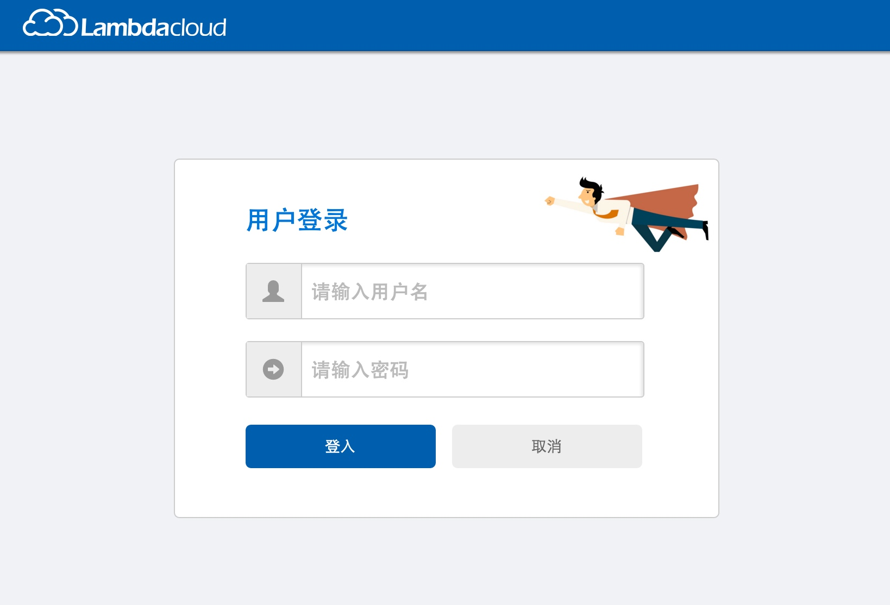
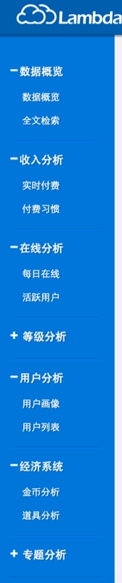
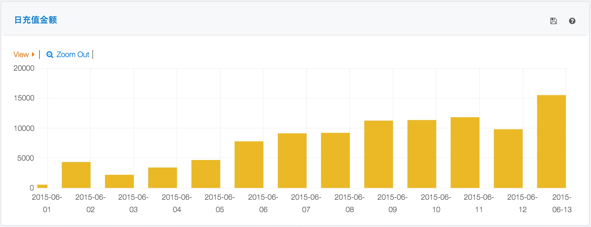
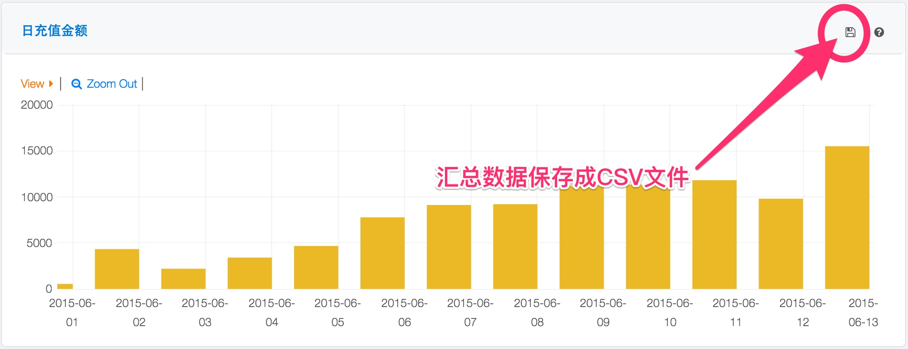
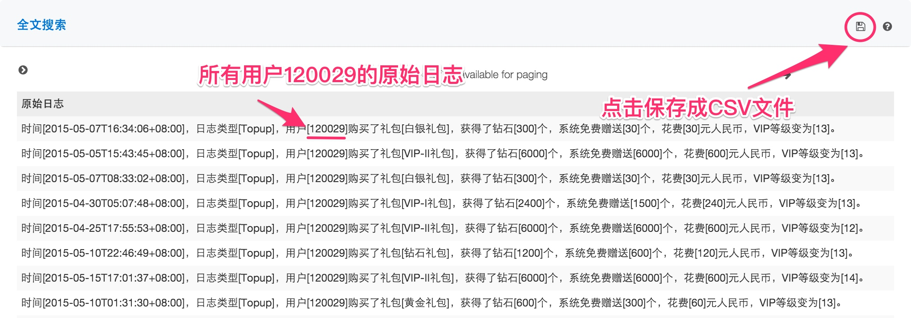

Lambdacloud 使用说明
简介
Lambdacloud提供一个完整的，基于游戏内部用户行为数据的大数据分析平台，可以提供游戏运营BI系统，用户行为模式分析系统以及定制化的数据挖掘服务。
使用流程
建议用户的使用流程如下：
st=>start: 注册
e=>end: 数据面板
applyToken=>operation: 分配Token
isRealtime=>condition: 是实时数据吗？
fileUpload=>operation: 日志文件上传
sdkUpload=>operation: SDK接入
cond=>condition: 确认？
st->applyToken->isRealtime
isRealtime(yes)->sdkUpload
isRealtime(no)->fileUpload
sdkUpload->e
fileUpload->e
注册
用户在首次使用Lambdacloud数据平台之前需要先进行注册。
UCloud用户
对于UCloud用户来说，可以使用UCloud的用户通过快捷通道直接接入Lambdacloud数据平台。步骤如下：
- 点击申请账号链接
- 系统会生成一个注册邮件发送到support@lambdacloud.com，请在邮件中填上您的公司名称，职务，部门和联系电话，点击发送
- Lambdacloud接到邮件后会第一时间跟您取得联系，建立账号
分配Token
当注册完毕后，会得到一个预分配的Token1 ，此Token会用来在数据传输中使用。
日志文件上传
Lambdacloud数据平台提供对于批量CSV格式的文件上传工具，可以把服务器端的状态数据导入数据平台。
CSV格式的状态数据
CSV格式要求
通过Lambdacloud数据平台CSV上载工具上载的CSV文件对格式有一定的要求。具体如下：
- 编码是
UTF-8格式 - 第一行是列的名称
- 每一行数据以回车符结尾
- 行中每一列的数据以半角逗号
，进行分隔 - 不支持以井号
#开始的注释 - 如果列名或者值中保护逗号
,，请使用双引号"将列名或者值括起来 - 如果列名或者值中包含双引号，请使用斜线
\进行转义 - 每一行的分隔逗号的个数必须相等
CSV文件格式示例:
姓名,年龄,性别,爱好
张三,33,男,
李四,23,女,"跑步,游泳"
王二麻子,38,男,电影\"大话西游\"
工具安装
CSV上载工具是Lambdacloud提供的开源软件览云精微工具箱的一部分，可以通过Github下载。
git地址：https://github.com/lambdacloud/lambda-util.js.git
此工具箱使用 Node.js 开发而成，提供了在命令行下的可执行脚本。
安装步骤
- 请参考 https://nodejs.org/download/, 根据相应的运行平台安装版本号大于0.10的 Nodejs 运行环境。安装后，请确认已安装正常：
- Mac OS/Linux 下请通过命令行
which node npm命令来检查或者直接运行node和npm命令来确认运行环境已经正常安装 - Windows 下请通过命令行
where node npm命令来检查
- Mac OS/Linux 下请通过命令行
可以使用以下两种方式取得工具：
使用
git来取得代码，并且随时更新到最新的版本- 准备好
git工具，可以参考Github官方指导文档 使用
git, 将代码克隆到本地git clone https://github.com/lambdacloud/lambda-util.js.git
- 准备好
直接下载zip压缩文件包
进入
lambda-util.js目录，运行npm install安装工具的依赖包$ cd lambda-util.js $ npm install依赖包安装完毕后，就可以使用了，可执行脚本
csv2lambdacloud位于bin目录下
工具使用
命令格式
bin/bin/csv2lambdacloud --token <分配给用户的token> \
--file <csv文件的全路径> --sd
参数列表
$ bin/csv2lambdacloud --help
Usage: csv2lambdacloud [options]
Options:
'-H, --host <Front End Host>', 'Specify front end host and port,
default: api.lambdacloud.com', 'api.lambdacloud.com'
'-D, --debug', 'Enable Debugging'
'-P, --proxy <http proxy>', 'Set proxy'
'-T, --type <ES type>', 'Set type'
'-B, --batch <batch size>', 'Set http uploading request batch
size, by default: 64'
'-s, --src <source from>', 'Set the source from where'
'--ss', 'set source from ss("服务器")'
'--sc', 'set source from sc("客户端")'
'--sd', 'set source from sd("数据库")'
'-T, --token <token of lambdacloud>', 'Specify the token'
'-F, --file <file to read>', 'Specify the file to read, get the
absoulate path to read'
示例
将本地数据库导出的CSV格式文件
~/UserInfo_DB/2015-10-29.csv导入Lambdacloud:假设：
- 分配给用户产品的Token是：
947329DB-B72F-4A9E-9426-02727C21013C - 用户的CSV文件位置：
~/UserInfo_DB/2015-10-29.csv - 此CSV的类型是来自数据库的状态表
- 日志类型是：
userinfo_db
命令行：
$ bin/csv2lambdacloud --token '947329DB-B72F-4A9E-9426-02727C21013C' \ --sd --file '~/UserInfo_DB/2015-10-18.csv' --type 'userinfo_db'- 分配给用户产品的Token是：
SDK接入
获得源码
Lambdacloud的SDK是完全开源的项目，没有任何隐藏代码。请克隆Github上的开源项目：https://github.com/lambdacloud/LambdacloudSDK
Android
生成liblogsdk.jar库
下载工程到本地
- 使用
git克隆git clone https://github.com/lambdacloud/LambdacloudSDK
或者
- 下载源码的Zip压缩包
- 使用
使用终端到工程目录下(android/logsdk)
使用命令行生成liblogsdk.jar
mvn package生成libsdklog.jar可在路径logsdk->target中查看
在Android.mk文件中添加路径(请根据实际路径添加)
LOCAL_SRC_FILES := \ +$(LOCAL_PATH)/logsdk/android/source/LambdaClient.cpp \ +$(LOCAL_PATH)/logsdk/android/source/LambdaDevice.cpp \ +$(LOCAL_PATH)/logsdk/android/source/LogSdkJniHelper.cpp \ +LOCAL_C_INCLUDES := $(LOCAL_PATH)/logsdk/android/include在proj.android/jni/android.mk中添加路径
+LOCAL_C_INCLUDES += $(LOCAL_PATH)/../../../../../logsdk/android/include \在AndroidManifest.xml中添加uses-permission
<uses-permission android:name="android.permission.INTERNET"/> <uses-permission android:name="android.permission.ACCESS_NETWORK_STATE" /> <uses-permission android:name="android.permission.ACCESS_WIFI_STATE" /> <uses-permission android:name="android.permission.READ_PHONE_STATE"/>添加logsdk库到您的工程中
- 在eclipse中，右键点击工程名，properties->Java Build Path->Libraries->Add External JARs,然后添加liblogsdk.jar到工程中，并在Project Settings->Libraries中添加该库。
在工程中初始化LogSdkJniHelper
//In main class, // please add this include #include "LogSdkJniHelper.h" jint JNI_OnLoad(JavaVM *vm, void *reserved) { JniHelper::setJavaVM(vm); // please add this line lambdacloud::LogSdkJniHelper::setJavaVM(vm);在工程中初始化DeviceInfo
// please add these import import android.content.Context; import com.lambdacloud.sdk.android.DeviceInfo; public class YOURAPP extends Cocos2dxActivity{ protected void onCreate(Bundle savedInstanceState){ super.onCreate(savedInstanceState); // please add these lines Context context = getApplicationContext(); DeviceInfo.init(context);示例
IOS
生成liblogsdk.a
下载工程到本地
- 使用
git克隆git clone https://github.com/lambdacloud/LambdacloudSDK
或者
- 下载源码的Zip压缩包
- 使用
使用Xcode打开该工程，点击Product->Clean
点击Product->Build,运行该工程即可生成静态库
查看Xcode左侧目录结构Products下，即可看到liblogsdk.a静态库
添加liblogsdk.a静态库及其头文件
- 将liblogsdk.a以及其头文件放在同一文件夹下
- 在xcode中，右键点击您的工程，选择Add Files to
XXX
（XXX为当前工程名称），添加liblogsdk.a静态库及其头文件 - 在Added folders中，选择Create groups
- 在Add to targets中，务必勾选当前工程
添加引用库CoreTelephony.framework,SystemConfiguration.framework
- 在Build Phases->Link Binary With Libraries中添加上述引用库
使用SDK
- 在需要使用SDK中相关方法时，#import
xxx.h
即可（xxx.h为所需头文件名称）
- 在需要使用SDK中相关方法时，#import
数据面板观察结果
在用户通过工具或者SDK完成数据上传后，就可以在数据面板观察到计算结果了2。这些直观的数据展示将为游戏运营提供直观而简洁的展示，可以给用户的决策提供数据上的支撑。
为获得最好的效果和支持所有的功能，请使用Chrome 40或者Firefox 38以上版本的浏览器访问Lambdacloud数据服务网站

输入用户名和密码后登录系统。页面导引
进入数据面板页面后，在页面的左侧是树形导引，您可以在这里选择想要看的数据类别进入数据页面：
数据展示
在每个数据展示页面都有简单而直接的图表为您展示您的数据。比如下图为每日游戏内充值金额的直方图：
点击右上角的问号
?图标，可以看到此指标的计算方法。
原始数据下载
Lambdacloud数据平台还为用户提供原始数据下载服务，用户上载的原始数据和图表的汇总统计数据都可以通过简单的鼠标点击下载为CSV格式（UTF-8编码）的文件。用户可以使用电子表格软件打开使用。
图表的汇总统计数据的下载
在每个图表的汇总统计面板的右上角
点击后会开始文件的下载，注意浏览器的提示：
原始数据的下载
原始数据的下载需要通过数据概览的全文检索进入：
进入后，输入查询项，比如游戏玩家的ID，然后在全文检索的面板中可以看到搜索结果，点击右上角的磁盘图标即可下载：

常见问题
请联系技术支持。
数据挖掘定制化服务
Lambdacloud还提供以下深度定制化数据挖掘服务，如果您有需要请邮件或者电话联系技术支持部门：
- 游戏付费玩家的推荐
- 游戏玩家的流失预测
- 游戏的广告投放效用
- 游戏玩家的行为分类
Lambdacloud 开发文档
对于具有开发能力的客户来说，可以直接访问Lambdacloud的API服务来上载数据。如果您有这方面的需求，请在建立帐号和申请完Token后遵循日志格式和API定义的规范。
日志格式
基本格式定义
单值格式
单值格式即为：字段名[字段值]，比如用户[124432]。数组格式
数组格式即为：字段名[字段值1,字段值2,字段值3]，各字段值之间用半角逗号,分隔。比如：队伍[小黑,火法,白虎,术士,全能]。
您可以在遵循格式定义的情况下自由定义和组合字段发送到LambdaCloud，比如：
时间[2014-11-10T01:05:46+08:00]，日志类型[login]，用户[120007]登录，
终端设备号为[744531840988896]，手机号码为[13681007118]，手机品牌[三星]，
手机型号[Galaxy3]，操作系统[Android4.3]，IP地址为[29.100.202.164]
日志使用UTF-8编码
UTF-8编码可以支持中文等多字节字符。
时间使用ISO8601格式
ISO8601定义了日期的格式表示，其中主要的规则如下：
- 日期表示为YYYY-MM-DD，即4位数字年，2位数字月和2位数字日，位数不够用0补，中间用
-
连接 - 时间表示为HH:MM:SS，即24小时的2位小时，2位分钟，2位秒，位数不够用0补，中间用
:
连接 - 日期期和时间中间用
T
连接 - UTC时间在时间尾部加上
Z
，时区时间在尾部加上时差。比如： 北京时间(+08:00)表示为：2014-11-10T10:01:33+08:00 UTC时间可以表示为：2014-11-10T02:01:33Z
特殊字段名的要求
| 特殊字段名 | 内部使用 |
|---|---|
| 时间 | 转化为timestamp |
| 日志类型 | 作为不同日志的区分，可以理解为同一种类型的日志会被集中存放，方便操作。 |
| 用户 | 转化为user_id |
接入API
日志发送
您可以配置您的应用发送HTTP POST请求到以下URL来将日志发送到Lambdacloud：
http://api.lambdacloud.com/log／v2
一个通过curl命令来执行操作的简单的例子：
> curl –XPUT –H 'Token: token' \
-H 'Content-Type: application/json;charset=UTF-8' \
http://api.lambdacloud.com/log -d '
{
"message": "hello world",
"tag": "test"
}'
注：因为 curl 会在 http 头部缺省加入 Content-Type: application/x-www-form-urlencoded，这样会照成识别错误，所以要在头部指明 Content-Type: application/json
API定义如下：
| 操作 | PUT |
|---|---|
| URL | /log |
| 头字段 | Token |
| 头字段 | Content-type: application/json;charset=UTF-8 |
JSON数据格式的字段：
| 字段名 | 是否必须 | 解释 |
|---|---|---|
| message | 必须 | 日志主体字段，可以为单条字符串，或者为字符串数组。 |
| tag | 可选 | 为本条或者本组日志打上一个或者一组标签，可以供查询使用。可以为单条字符串，或者为字符串数组。 |
字段名是大小写敏感的
示例：
单条日志：
{ "message": "This is a single log." } 或者 { "message": "This is a single log.", "tag": ["test", "debug", "single"] }多条日志：
{ "message": [ "This is the first log.", "This is the second log." ], "tag": "multi" }
HTTP返回代码：
| 代码 | 具体含义 |
|---|---|
| 200 | 日志已被正常接收 |
| 400 | 头部中没有包含Token字段 |
| 406 | 系统中无此Token数据 |
最佳实践
日志格式的修改本着只增加的原则
日志格式是会随着业务和需求的变化而变化的，那么在修改日志时，遵循只增加的原则，即只在原先的日志之后增加新的内容，但并不修改之前的日志格式。比如：旧版的日志
时间[2014-11-11T03:47:43+08:00]，日志类型[topup]，用户[120013] 购买了[VIP-I礼包]，获得[2400]钻石，花费人民币[240]元新版的日志
时间[2014-11-11T03:47:43+08:00]，日志类型[topup]，用户[120013] 购买了[VIP-I礼包]，获得[2400]钻石花费人民币[240]元，赠送了[1500]钻石日志中的字段内容方便阅读
在日志中使用的字段以及行文以方便人来阅读为最佳，不建议使用关系型数据库中的索引ID，UUID等。这样的设计可以提高在之后的日志查看中的效率。
比如够买了礼包ID[27]就不如购买了[白银]礼包直截了当。不同的日志尽量格式清晰，易于正则表达式匹配
日志的关键字段提取是需要使用正则表达式匹配的，所以不同日志最好使用不同的格式，这样在匹配中就可以减少错误。